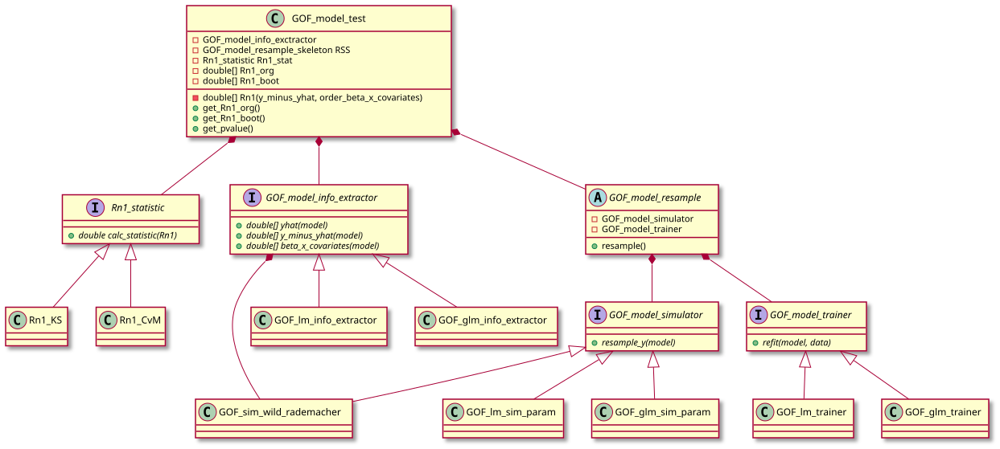

Class-diagram

Classdiagram
- Rn1_statistics, GOF_model_info_extractor, GOF_model_simulator, GOF_sim_wild_rademacher and GOF_model_trainer follow the strategy pattern
- GOF_model_resample follow the template pattern.
Note that the object-oriented concepts are realized via the R6-package and that R6 actually does not have a real interface-functionality or abstract classes.